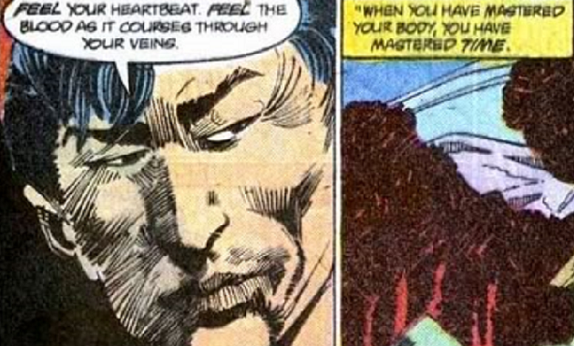
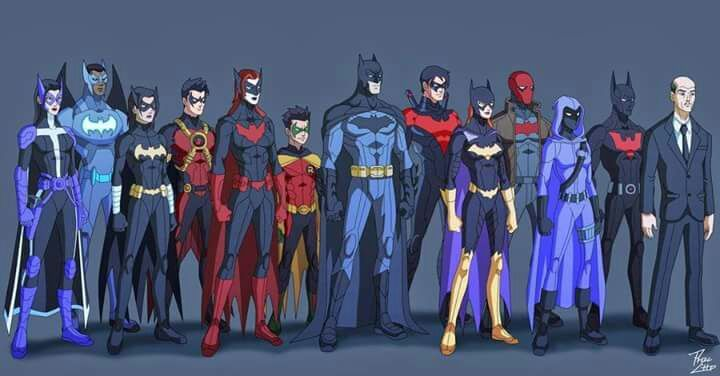

Batman es la identidad secreta de Bruce Wayne, un empresario multimillonario, galán y filántropo. Presenció el asesinato de sus padres cuando era niño, lo marcó profundamente y lo llevó a entrenarse en la perfección física e intelectual para ponerse un disfraz de murciélago con el fin de combatir el crimen. Batman trabaja en Ciudad Gótica, con la asistencia de varios personajes de apoyo, incluidos su compañero Robin y su mayordomo Alfred Pennyworth.
Batman a diferencia de otros super heroes no posee ninguna habilidad especial o sobrehumana. si no que posee entrenamiento en diferentes areas cientificas y de artes marciales. entre las que se destacan mas se encuentran las siguientes:
| Entrenador | Habilidad | |
|---|---|---|
| Chu Chin Li | técnicas curativas y kung fu que le ayudaron a enfocar su mente |  |
| Tsunetomo | técnicas para soportar el dolor mediante la concentración |  |
| Harvey Harris | trabajo detectivesco urbano, seguir pistas, buscar a los testigos e informantes entre vagabundos y criminales |  |
| The Shaman | técnicas de autosugestión, no solo a usar una máscara, sino a “ser la máscara”, cambiar al nivel espiritual y ser más que un hombre. |  |
La familia de Batman funciona como una red de superhéroes de mentalidad similar que operan en y alrededor de Gotham City, con Batman a la cabeza. El grupo por lo general se ven interactuando unos con otros y ayudar a cada uno de los caso
